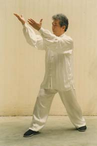
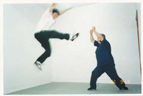
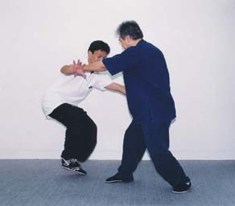
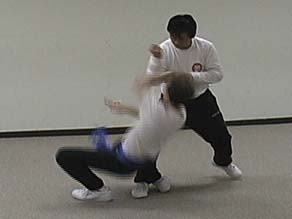

The Pre-Heaven Power Method
"The Pre-Heaven Power Method - Not only for fajin but for optimal body mechanics!"
"Feeling is believing!"
Introduction
The Pre-Heaven Power Method, or Shian Tian Jin Fa, developed by Grandmaster Pan Yue, is a systematic method for teaching optimal human body mechanics for the movements of martial arts or other sports. It is called "Pre-Heaven" because it merely exploits the body's natural potential -- a potential which nevertheless remains unnoticeable to most people. In general, the training method can be divided into four stages:
- Stage 1: Six basic standing stakes to establish the optimal body structures
- Stage 2: Testing the structures with fixed step and moving step fajin movements. Click Fajin Testing Exercises of the Pre-Heaven Power Method demonstrated by Master Wei-Chung Lin and Yang style Tai Chi Chuan Fajin and Form demo by Master Wei-Chung Lin to watch the YouTube videos that demonstrate the fajin testing exercises.
- Stage 3: Sensitivity training based on the body mechanics learned at the first stage. Click Response-Hands Exercises demonstrated by Master Wei-Chung Lin to watch the YouTube video which demonstrates the exercises for sensitivity training.
- Stage 4: Controlled sparring and Free sparring based on the body mechanics developed through the previous two stages.
Step 1: Standing Stake
Step 2: Fajin Testing
Step 3: Response Hands
Step 4: Sparring
Characteristics of the Pre-Heaven Power Method
1. A systematic and Comprehensive Approach to Internal Power Development
The Pre-Heaven Power Method draws from an evolving body of knowledge about optimal body mechanics, developed by Master Pan and based on his study of human anatomy and his interaction with students. Master Pan has passed this knowledge down to many of his disciples and has established the fact that this knowledge and use of optimal body mechanics, including the fajin techniques, can be passed down to students through a step-by-step procedure. Thus the correct methodology for acquiring internal power is no longer a mystery but a teachable subject, just like any other discipline.
The method for exerting power, or fajin, is an important aspect of body mechanics and is considered an important skill in every style of martial art. Traditionally, a practitioner's skill in fajin has depended primarily on his or her individual talents and the student learns simply by trying to imitate the fajin movements of his/her teacher. Even though there are some methods to train one’s fajin ability, those methods are usually limited to only a few movements. Moreover, internal power has often mistakenly been considered to be the mysterious Qi power. In the past, according to the literature, some masters were able to generate amazing power and rebound opponent several feet away. However, due their lack of knowledge, students and teachers usually explained this away with “Qi power.” Consequently, students could spend their whole lives trying to develop such power in their fajin movements without any success.
Another common mistake is to think that practicing qigong can increase the internal power. While it is true that practicing qigong will increase your energy, qigong alone will never give a student the power demonstrated by a skillful Pre-Heaven Power Method practitioner, since the determining factor in the production of such power is structure rather than Qi.
2. True whole body integration “from toes to fingers”
The Book of Tai Chi by Wang Zhong-Yue says of true whole-body integration that “the power is rooted at feet, started from legs, coordinated at waist, and propagated to fingers.” Many Tai Chi practitioners think they understand this and have put this theory into practice. But, in fact, they don’t. This is because they are still influenced by the doctrine of traditional Chinese martial arts training which teaches that the posture of the feet should be “five toes firmly grasping the ground” or "Yongquan sucking the ground ". According to this traditional paradigm, the feet are tightly glued to the ground, which forms the foundation for upper body movements. Once the lower body forms a solid stance, the focus of attention is the hips and waist. Therefore, it is said that “the waist is like the axis of a car.” The power is then generated by the movement of the waist and hips.
Even if one pushes off the ground with feet and then moves the hips and waist, one still faces the problem of whether the power generated by interacting with the ground can be transmitted to the end points without loss of energy. In other words, the question of how to establish a channel in the body so that energy can be transmitted losslessly still needs to be solved. This is not an easy task since there will be many obstacles in the body if these critical points are not properly aligned.
Under the Pre-Heaven Power Method, however, Dan Tian is no longer the source of power generation. Instead, Dan Tian figures as just one of the important transition points in the path of energy transmission from the feet to the hands. For a practitioner of the Pre-Heaven Power Method, the most difficult bottleneck in passing the energy through the feet to the hands is actually around the hip area. Once the body moves in an integrated manner from the roots to the end points, the necessary movement, especially those from the waist, becomes smaller than those required by methods which generate power based on the waist's movements.
The Pre-Heaven Power Method is perhaps the only existing method that implements faithfully the transmission of energy described by Mr. Wang. In this method, the power is initiated by squeezing the ground with the balls of the feet. Since human beings evolve to walk with their whole feet contacting the ground (unlike animals such as lions or cats), they no longer exploit the full potential of the balls of the feet in exerting power. The balls of the feet no longer play an important role in our daily lives. The training of the balls of the feet is the most important part of the Pre-Heaven Power Method. Since we all naturally have access to this (potential) power, the method is described as “Pre-Heaven” in nature. The training also focuses on establishing a power channel in the body that can transmit energy in a lossless manner and establishing body mechanics such that the student can relax the forearms.
Once you have mastered the Pre-Heaven Power Method, every movement you make will truly be based on the integration of the whole body, from the balls of the feet to the tips of the fingers. In other words, you will have maximized your potential to generate power in every movement.
3. Fajin is independent of breathing
A movement based on the Pre-Heaven Power Method is always initiated from the balls of the feet. After the feet squeeze the ground, the “borrowed” force is transmitted to the end points without the help of exhalation. In fajin for many styles of martial arts, by contrast, sudden exhalation is indispensable. The faster one exhales, the more explosive the exerted force. A typical example is the technique of shouting "Heng" or "Ha" when doing fajin.
In contrast to fajin that uses the Pre-Heaven Power Method, fajin based on exhalation is relatively inefficient. Exhalation-based fajin consumes a larger amount of energy and ignores the demands of a real fight, where it may be difficult to prepare every move with inhalation and make every strike with an exhalation. Moreover, the sudden exhalation is an unnatural way of breathing and in the long run may be harmful to health. Once you master the Pre-Heaven Power Method, however, you can fajin at will in any posture without the help of exhalation. There is no need for any preparatory movement (such as breathing in and/or moving the arm back) before fajin and there is almost no delay between the moment you intent to fajin and the fajin movement itself. The fajin movement is triggered by squeezing the ground with the ball(s) of the foot (feet) immediately after the foot (feet) contacts the ground. Any passive arm movement corresponds to a unique way of squeezing the ground with the balls of the feet. As a matter of fact, one can even talk and fajin at the same time with ease. Fajin is no longer something you need to practice and develop in every movement which exerts power. It is as easy and natural as any movement you do in your daily life.
4. Fajin in an Effortless and Continuous Way
The practice of trampling on the ground to facilitate a fajin movement is common in many styles of Chinese martial arts. Although trampling the ground enables you to exert more power, it is impractical or difficult to apply this method in a real fight. Trampling on the ground can be considered to be a “coarse” version of squeezing the ground with the balls of the feet. The objective is to "borrow the force" from the ground.
Trampling on the ground to enhance the issuing power is a simple method which can be learned easily, while mastering the mechanism of squeezing the ground with the balls of the feet may take many years of training. Nevertheless, learning the Pre-Heaven Method has immediate advantages, since it allows one to fajin continuously and efficiently. It is obvious that continuously trampling on the ground is simply impractical in a real fight. The amazing fact about the balls of the feet is that they seem to possess “local intelligence” after they are well trained and become versatile. A high-level Pre-Heaven Power practitioner is able to direct his/her arms simply by thinking about it, since the balls of the feet will squeeze the ground in a certain way to achieve this automatically. Once the intent is there, the movement follows instantly with the help of the balls of the feet. The potential is enormous and beyond the understanding of most non-Pre-Heaven Power practitioners. The motion generated from continuously squeezing the ground with the balls of the feet is smooth and curved. The same is true in sparring -- since the trajectory of a motion is always a continuous curve, the motion will continue until one hits the target.
5. A Reality-Based Training Method
Since martial arts practitioners must interact with one or more opponents, it is very important to make sure that the power generated by any movement transfers efficiently and effectively to the opponent. Just to feel powerful or show some seemingly powerful movement (e.g., the whole body shaking) when you practice a solo form is not enough. In the Pre-Heaven Power Method, you must always train with partners so that your movements are constantly tested and you get feedback from the results of testing.
Moreover, training with a partner is different from training with a punching bag. Training with a punch bag works to some degree, but it's hard to practice some variations of fajin against it. For example, some variations incorporate an uprooting move, which is hard to simulate on a bag. In addition, it is likely to be difficult to project force at some angles with only a training bag as the opponent. Since different partners will contact you and react to your movements differently, it is very important that you verify your skill through practice with multiple partners. At every stage of the Pre-Heaven Power Method training, the correctness of the body structures and the effectiveness of the movements are tested against multiple partners.